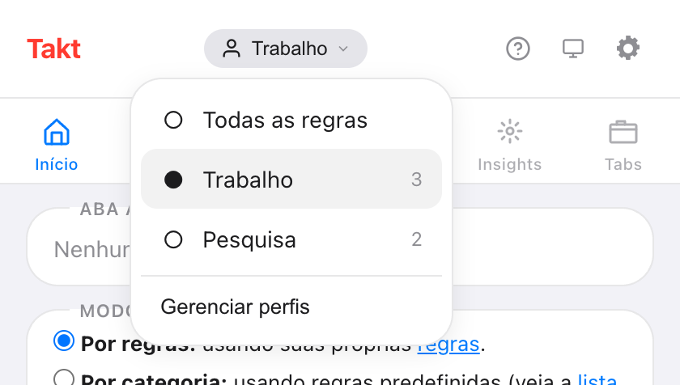
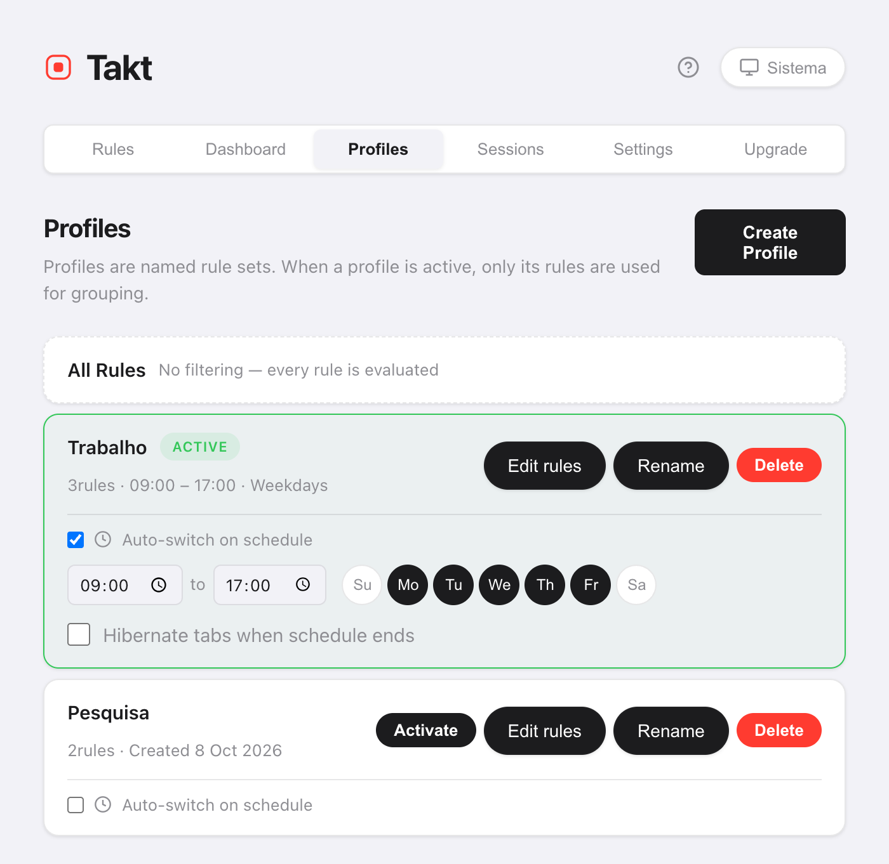

Resposta curta: na página de opções do Takt, abra Profiles, crie "Trabalho" e "Pessoal" e atribua regras a cada um. Troque pelo menu de perfis do popup, ou marque Auto-switch on schedule e defina os horários e os dias.
- Quando um perfil está ativo, só as regras dele agrupam suas abas.
- Os agendamentos funcionam por horário e dia da semana, verificados uma vez por minuto.
- Opcional: hibernar suas abas quando o agendamento termina. Premium
Por que eu ia querer mais de um conjunto de regras de abas?
Porque uma regra que ajuda no trabalho atrapalha em casa. Um grupo "Code" para o GitHub faz sentido às 10h. Às 21h, talvez você prefira YouTube e receitas agrupados, e nenhum grupo de trabalho.
Sem perfis, você tem duas opções: uma lista longa de regras que tenta cobrir tudo, ou ligar e desligar regras à mão. Os perfis deixam cada contexto com a sua própria lista curta.
Como crio um perfil?
- Abra a página de opções do Takt e vá em Profiles.
- Clique em Create Profile e dê um nome a ele.
- Copie para ele todas as suas regras atuais, ou comece do zero.
- Clique em Edit rules para marcar as regras que esse perfil usa.
Uma regra nova criada enquanto um perfil está ativo é adicionada a esse perfil automaticamente.
Como alterno entre perfis?
Abra o popup e clique no nome do perfil, no topo. O menu lista Todas as regras e cada perfil, com o número de regras. Escolha um e ele passa a valer na hora.

Todas as regras desliga os perfis, então todas as regras são avaliadas. Trocar de perfil não mexe nos grupos que você já tem. As novas abas seguem as novas regras; clique em Agrupar abas no popup para reagrupar o resto.
Como troco de perfil automaticamente conforme o horário?
No cartão de um perfil, marque Auto-switch on schedule. Depois defina:
- Horário de início e de fim. O padrão é das 09:00 às 17:00.
- Dias. Ative ou desative de Su (domingo) a Sa (sábado). O padrão é de segunda a sexta.
- Hibernate tabs when schedule ends (opcional).

O Takt verifica o agendamento uma vez por minuto. Quando o período começa, ele ativa o perfil. Quando o período termina, ele volta para Todas as regras.
Se dois agendamentos se sobrepõem, vale o perfil criado primeiro.
O que faz "Hibernate tabs when schedule ends"?
No fim do período, o Takt hiberna suas abas abertas. Ele pula a aba ativa, as abas reproduzindo áudio, as abas fixadas e qualquer URL da sua lista de abas que nunca são suspensas.
Suas abas de trabalho param de usar memória quando o expediente acaba, e ficam na lista de abas hibernadas até você despertá-las.
Perfis vs. outras formas de separar trabalho e casa
| Perfis separados do Chrome | Perfis do Takt | |
|---|---|---|
| O que fica separado | Tudo: janelas, histórico, logins | Só as regras de agrupamento |
| Mesma janela e mesmas abas | Não | Sim |
| Troca conforme um agendamento | Não | Sim |
Se você precisa de logins e histórico separados, use perfis separados do Chrome. Os perfis do Takt só mudam como as abas são agrupadas dentro do navegador que você já usa.
O que os perfis não fazem
- Eles não fecham nem abrem abas. Um perfil muda quais regras valem. Para trocar um conjunto inteiro de abas, use as sessões.
- Durante o período, o agendamento manda. Se você trocar de perfil à mão no horário agendado, o Takt volta na próxima verificação, em cerca de um minuto. Desligue o agendamento para ficar em outro perfil.
- O horário de fim precisa ser depois do de início. Um período que passa da meia-noite precisa de dois perfis.
Regras de trabalho no trabalho. Regras de casa em casa.
Adicionar o Takt ao Chrome, grátisPerguntas frequentes
O que acontece com as regras que não estão no perfil ativo?
Elas são ignoradas até você voltar. Selecione Todas as regras para usar todas as regras de novo.
Trocar de perfil reagrupa minhas abas abertas?
Não. Os grupos existentes ficam. As novas abas seguem as novas regras. Clique em Agrupar abas no popup para reagrupar o que já está aberto.
Com que frequência o Takt verifica o agendamento?
Uma vez por minuto. Um perfil é ativado cerca de um minuto depois do horário de início e desativado cerca de um minuto depois do horário de fim.
Os perfis são gratuitos?
Não. Perfis e agendamentos são Premium, US$ 3/mês ou US$ 30/ano. O plano gratuito inclui 5 regras e o agrupamento por regras.